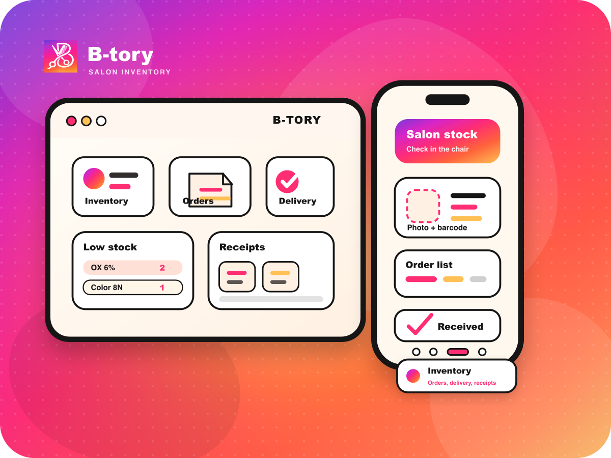

美容サロンの在庫アプリは、B-tory。
在庫発注納品領収書


紙やExcelの抜け漏れを減らし、在庫・発注・納品・領収書までその場で一元管理。
B-toryは、Excel/CSVや既存の在庫表から始めて、写真・バーコードでも商品を登録できるサロン向け業務アプリです。仕入先別・メーカー別・カテゴリ別に整理し、要発注の確認、発注書作成、入荷待ち、納品登録、領収書保存まで、サロンワークの流れに合わせて使えます。
Free Starterから開始予定。Starterは30日無料トライアルも準備中です。iPhone / iPad / Mac / Windows 対応予定。

紙・Excel・メモに散らばりがちな在庫、発注、納品、領収書、材料費の情報を、サロンワークに沿った流れにまとめます。
Excel/CSVから取り込み、既存の在庫表をもとにサロン管理を始められます。
仕入先別・メーカー別・カテゴリ別に、サロンの管理しやすい見方で商品を整理できます。
仕入先ごとに発注書や本文を作成し、届いたら納品登録。領収書・納品書・請求書も保存できます。
在庫や使用データから、材料費率や薬剤使用の傾向を確認し、あとから振り返れます。
紙・Excel・メモで散らばりやすいサロン材料管理を、現場で使いやすい流れに変えます。
Excel/CSVや既存の在庫表から商品を取り込み、写真・バーコードでも登録・確認できます。カラー剤、店販商品、備品まで、営業中でもその場で在庫を見つけやすくします。
要発注の確認、発注書作成、入荷待ち、納品登録までを一連で管理。紙やExcelで起きやすい発注漏れ・確認漏れを減らします。
領収書、納品書、請求書を写真やPDFで保存。発注番号、仕入先、商品名であとから探せるので、材料管理や確認作業がスムーズになります。
商品登録から発注、納品、領収書保存まで。サロンワークに沿って使えます。
Excel/CSVから取り込み、写真・バーコードでも登録。
営業中でも数量を確認。
足りない商品を見逃しにくく。
仕入先ごとに発注書や本文を作成。
届いた商品を登録して在庫へ。
領収書・納品書・請求書を写真やPDFで保存。
材料費率や使用傾向を確認。
まずはFree Starterで小さく試して、本格運用はStarterへ。チーム運用や複数端末はPro、連携や自動化はMaxで対応予定です。
写真・バーコード・発注・納品・領収書保存の流れを、小さく試せる無料スターター。
その後 ¥1,980/月・年額 ¥19,800/年 予定
商品登録、写真保存、発注書作成、納品登録、領収書管理まで、実際のサロン業務でしっかり試せるプラン。
年額 ¥49,800/年 予定
複数スタッフ、複数端末、クラウドバックアップを使いたいサロン向け。
複数店舗、外部連携、AI/OCRなどの高度な運用を検討するサロン向け。
※価格・機能・無料トライアルは予定です。初回リリースではFree Starterから提供予定です。
※Starter 30日無料トライアル、有料プラン、アカウント機能、クラウドバックアップ、複数端末同期、AI/OCR、外部連携は今後のアップデートで提供を検討しています。
B-toryは、iPhone・iPad・Mac・Windowsアプリとして展開予定です。
Apple Storeで公開予定。営業中の在庫チェックや領収書保存をスマホで。
Apple Storeで公開予定Apple Storeで公開予定。タブレットの大きな画面で商品整理や発注確認を。
Apple Storeで公開予定Mac版 準備中。サロンのバックオフィスで商品整理やレポート確認を。
Mac版 準備中Windows版 準備中。PCでの事務作業や在庫整理にも対応予定。
Windows版 準備中